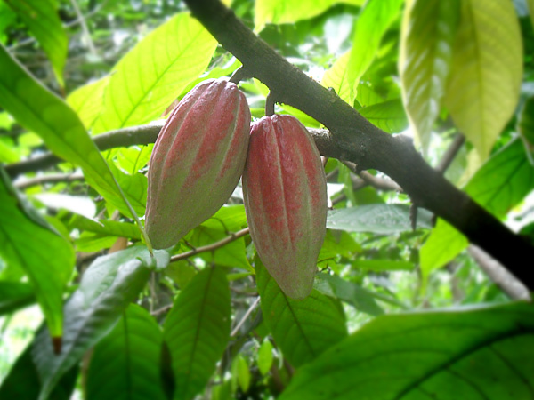
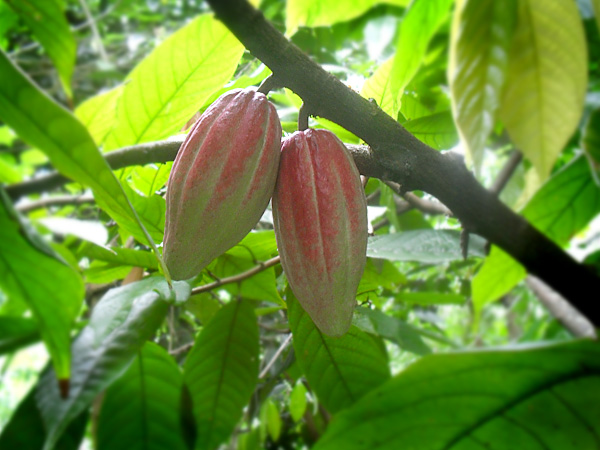
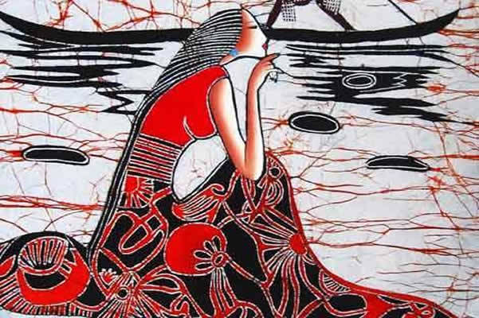
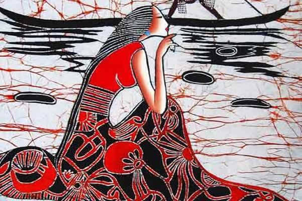
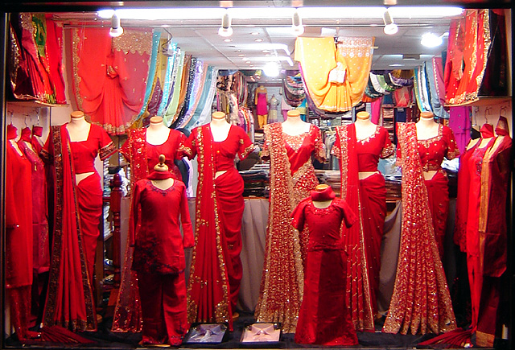
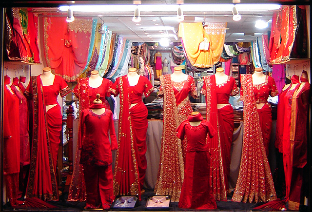
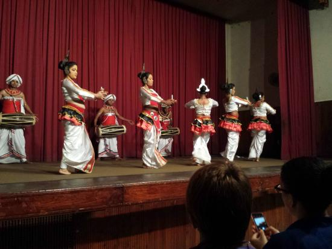
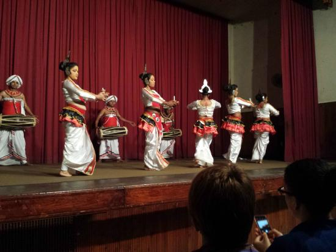

After taking breakfast leave to Kandy (165km - 4hrs)
On the way, visit Pinnawala Elephant orphanage. There you can see more than 150
elephants bathing and you can feed baby elephants
On the way taste king coconut and visit famous spice garden

 

In kandy you can watch and buy world famous Sri Lankan Bathik and silk Garments
 

 


Then visit famous temple of tooth view point. In the evening watch kandian cultural dance

 


Take dinner and stay night in Kandy


-